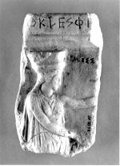

<!DOCTYPE HTML PUBLIC "-//W3C//DTD HTML 4.0 Transitional//EN">

<html>
<head>
	<title>2. Tekst op marmer</title>
<!--- stylesheet --->
<link rel="STYLESHEET" type="text/css" href="../../css/style.css">
<link rel="STYLESHEET" type="text/css" href="../../css/default.css">
<script language="JavaScript" src="../../js/index.js"></script>
<script language="JavaScript" src="../../js/browser_stylesheet.js"></script>
<script language="JavaScript" src="../../js/printbug.js"></script>
<script language="JavaScript" src="../../js/functiondetect.js"></script>


</head>

<body leftmargin=0 topmargin=0 marginwidth="3" marginheight="0" bgcolor="White" onLoad="detect()">

<table width="480" border="0" cellspacing="0" cellpadding="0">
<tr>
    <td class="small">
        <a href="http://www.bibliotheek.universiteitleiden.nl" class="small" target="_top">Bibliotheken</a>
		
		<a href="https://www.bibliotheek.universiteitleiden.nl/bijzondere-collecties/tentoonstellingen" class="small" target="_top">Tentoonstellingen</a>
		
		<a href="../../goedgezien/" class="small" target="_top">Goed Gezien</a>
         Objectbeschrijvingen</td>
</tr>
<tr>
  <td class="small"><BR>
  </td>
</tr>

  <tr>
    <td>
      <!--- INHOUD --->
      <a name="top"></a>
      <!--- 4 VERSCHILLENDE KOPJES --->

        	<div class="hoofdstuk">2. Tekst op marmer</div>
    <p>Staatsoorkonde. Grieks. Penthelisch marmer, 180 mm hoog. Athene, tweede helft van de
    vijfde eeuw v.Chr. &nbsp; --&nbsp; (Rijksmuseum van Oudheden, RO III 95)</p>
    <hr>
    <p><a href="c/c002.htm" target="_top"></a> Van dit fragment van een Grieks staatsreliëf is
    de oorspronkelijke vorm niet goed meer vast te stellen. Een naar rechts gewende
    vrouwenfiguur, gekleed in een gewaad dat zowel een Dorische &#145;peplos&#146; als een
    mouwloze &#145;chiton&#146; kan zijn, strekt de linkerarm naar rechts ter hoogte van de
    schouder. De rechterarm is ter hoogte van de schoot eveneens naar rechts gericht. Op het
    hoofd draagt zij een &#145;polos&#146; (hoge hoofdtooi). Het in het midden gescheiden
    golvende haar is op de rug tot een hangende vlecht ineengestrengeld. Op de eenvoudig
    geprofileerde lijst boven haar staat een onvolledig bewaarde inscriptie:
    &#145;&#159;&#154;&#155;&#149;£¦&#153;[...&#146;. In het eigenlijke reliëf staat rechts
    naast het hoofd de eveneens niet volledige inscriptie:
    &#145;&#03;&#156;&#03;&#149;&#03;£&#03;£&#03;&#149;[...&#146;. Deze geeft aan dat de
    vrouw een personificatie van de stad Messene, het huidige Messina op Sicilië, moet zijn.</p>
    <p>Het reliëf heeft ongetwijfeld betrekking op een verdrag tussen Messene en Athene. Op
    grond daarvan mag verondersteld worden dat rechts zich een naar links gewende
    Athena-figuur bevonden heeft. Vermoedelijk reikten de twee vrouwen elkaar de rechterhand
    als teken van verbondenheid. Onder de rechterhand van Messene herkent men nog de letters
    &#03;&nbsp;&#03;¡[... . </p>
    <p>Het valt op dat de inscriptie op de lijst in een ouder lettertype is aangebracht dan de
    andere. De datering is omstreden en loopt uiteen van circa 455 tot 410/409 v.Chr. </p>
    <hr>
    <p><strong>Literatuur</strong><ul>
      <li>F.L. Bastet [en] H. Brunsting, <i>Corpus signorum classicorum Musei Antiquarii
        Lugduno-Batavi. [...]</i> Zutphen 1982, dl. 1, p 105-106, nr. 195, dl. 2, pl. 53, nr. 195.
      </li>
    </ul>
    </td>
  </tr>
        <!--- footer	 --->
        	<table border="0" cellspacing="0" cellpadding="0">
        	<tr>
        		<td colspan="2"></td>
        	</tr>
        	<tr>
        		<td bgcolor="#002E65" colspan="2"></td>
        	</tr>
        	<tr>
        		<td align="left"><a href="javascript:history.back(-1);" class="hornav">vorige pagina</a></td>
        		<td align="right"><a href="#top" class="hornav">top pagina</a></td>
        	</tr>
        	<tr>
        		<td colspan="2"></td>
        	</tr>
        	</table>
    </td>
  </tr>
</table>

</body>
</html>
